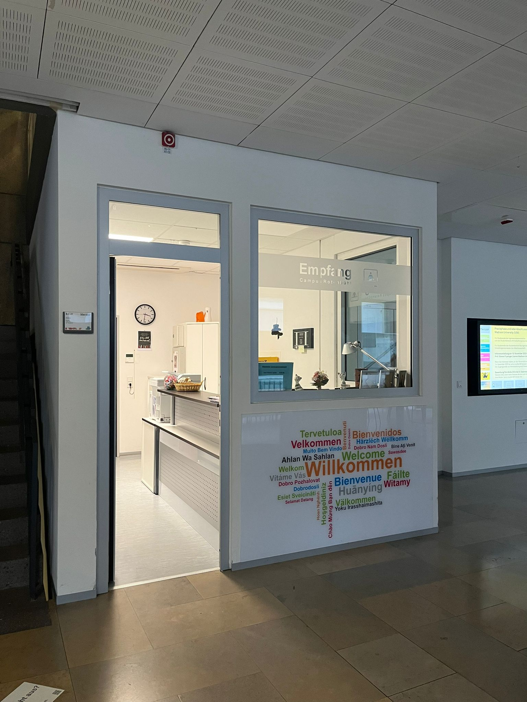
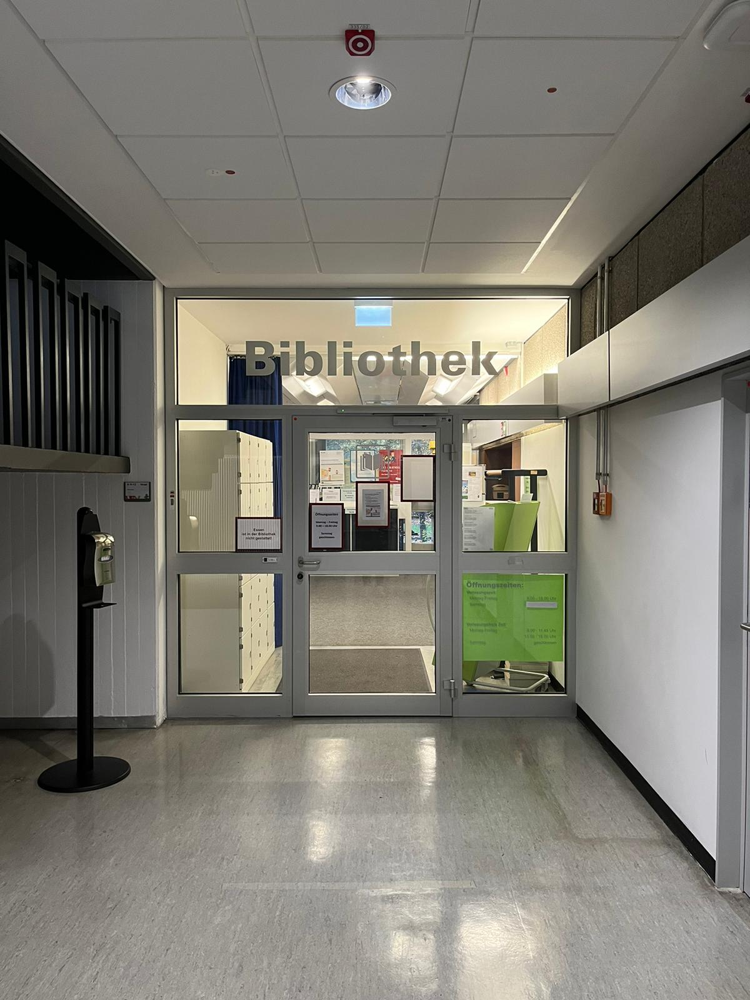
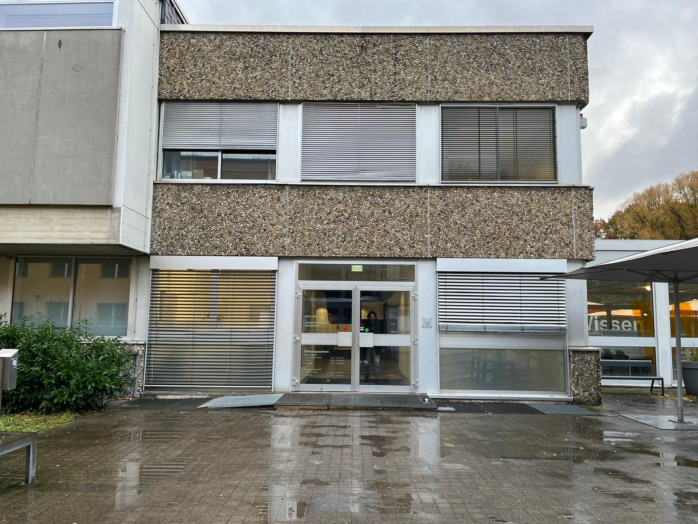

HTW Saar Campus Rotenbühl
Eingang Ost
Der Osteingang ist angeschlossen an den Dozentenparkplatz und führt in das B-Gebäude. Hier findet ihr überdachte Fahrradständer und einen der insgesamt zwei Raucherbereiche auf dem Campus.

Sekretariat
Unmittelbar hinter dem Osteingang findet ihr das Sekretariat im "Gebäude B". Dort erhaltet ihr schnelle Hilfe und Informationen bei Fragen bezüglich des Studiums.
Auditorium
Wenn ihr vom Sekretariat aus dem "Gebäude B" in das "Gebäude C" geht, kommt ihr direkt zum Auditorium. Dort finden sowohl Veranstaltungen als auch die Klausuren statt.

MenSaar
Unter dem Auditorium findet ihr die MenSaar im Kellergeschoss des C-Gebäudes. Nähere Informationen der MenSaar findet ihr auf der Frontpage.

Die Hörsäle
Die Hörsäle des Campus befinden sich im "Gebäude A". Auf diesem Bild seht ihr einen der kleineren Hörsäle; der sogenannte "Aldi-Hörsaal" im A-1-05.
Bibliothek
Im Kellergeschoss des "A-Gebäudes" findet ihr die Bibliothek.
Hofeingang
Außerhalb des A-Gebäudes befindet sich der Innenhof des Campus. Der ideale Ort, um frische Luft zu schnappen.
Eingang zum E- und D-Gebäude
Direkt gegenüber des Hofeingangs aus dem "Gebäude A" findet ihr den Eingang zu den Gebäuden E und D, in denen sich vorrangig die PC-Räume befinden.

Eingang West
Vom Hof aus findet ihr dann schließlich auch den West-Eingang des Campus.